SEASONS OF EARTH AND SKY
Just when you thought the planting was done...
Ah, summertime, "when the livin' is easy." Time to kick back and relax, right? No! Not this year. Y2K is coming, or haven't you heard? Even if the computers cause no trouble at all, people panicking at the thought of it are liable to buy up all the canned goods in sight. So get out of that armchair and get going on that fall-harvest garden you've always talked about but have never worked up the energy to plant. Polish up the pressure-canner and get in a supply of canning jars and lids before the Y2Kers get 'em all. And plan to dry, cold-store or can the fall harvest in case the electric grid does go down for whatever reason taking your freezer with it.
Get out your little Mantis tiller or wheel hoe and dig up and plant soil between the rows in the garden you sowed this spring. As summer crops come in, prepare the land immedi ately for a fall crop. Till in compost or organic fertilizers and get in the new seed.
With the growing popularity of four-season gardening, seed retailers are bringing out varieties especially for late planting. Below is a two-climate list to consider, with varieties selected from the catalogs of Johnny's Selected Seeds (JSS) of Maine and South Carolina's RH Schumway's (RHS).
Georgia Southern (RHS), 75 days. This kale-like loose-headed cooking green is a favorite southern "fried green" but worth trying in the north (where it's called a "stir-fry'). Best after light frost. Pick outer leaves, and it keeps on coming.
Winterbore (JSS), 28/60 days. An F1 hybrid that will regrow after outer leaves are pulled. Coldhardy, its flavor is actually improved by frost. I pick frozen kale out of the snow until a thaw wilts it.
Ruby Red (JSS and RHS), 59 days. Bred for late sowing. Frost-tolerant, and winter-hardy in the south.
China Rose (RHSi, 50 to 60 days. Tolerant of light frost, these delicious 5"-long oriental radishes won't survive hard frost, but can be dug and stored in a cold cellar or moist sand.
Charleston Wakefield (RHS), 70 days. Start seeds in a cool place. Will overwinter in the south.
Lutz Green Leaf or Winter Keeper(RHS), 80 days. An old-timer that I've grown for 30 years. Big, gnarly surfaced and ugly, but tender. Keeps well and has succulent greens. Sow before the end of July. If you lack a cold cellar, store in containers of moist sand in the cellar or in a hay-lined pit outside near the house foundation. Or put up in a tangy vinegar syrup as pickled beets to retain color and reduce the possibility of spoilage.
Laura (JSS), 115 days. If you can get it in time, this extra cold-hardy leek can be harvested from fall to spring.
Nevis (JSS), 68 days. An Ft hybrid bred for ground storage. Blight-resistant tops. Pelleted seed available. Cover with straw in the fall and , g all winter and spring.
Waltham (RHS), 93 days. An old open-pollinated variety just reintroduced as cold resistant and best for fall Will produce side shoots until ground is frozen solid. Seed directly in the harden. Try drying blanched florettes-retains color and flavor better than canning.
Wando (RHS), 67 days. Tolerates both hot and cold weather better than any other. Good canner, but yields aren't tremendous, so plant a lot. Grows to 30 inches, so appreciates a little support such as brush piled along the row.
Tennessee Green Pod Bush (RHS), 50 days. Will do well in heat of late summer. In 90 days, dries into a great baking bean. Jade (JSS), 53 days. Another bush bean that yields well under heat and cold conditions. Dry green beans on a string for "Leather Britches," or can or pickle them in a dill and garlic brine for "Dilly Beans."
Oliver Fl (JSS), 90 days. The shortest-season Brussels sprout, but still, sow by mid June. A month before frost, pinch out growing tops. After a good frost, remove all leaves, pull plant-stem, roots and all-and hang upside down in a warm corner of the barn. Pick sprouts until spring.
Saladbowl Oak Leaf (JSS), 29 to 49 days. An old favorite that can be picked young or at maturity and resists bolting in hot weather. Surround a plot with hay bales, cover with an old window sash and pick lettuce into the winter.
Photos: COURTESY OF PARK SEED CO. 1-800-845-3369
To request your free seed catalogs, call JSS at (207) 437-4301 and RHS at (803) 663-8771.
For some well-informed advice on devices and practices for late season (and every other season) gardening, get yourself a copy of the fine book, Four-Season Harvest: How to Harvest Fresb Organic Vegetables from Your Home Garden All Year Long, by master gardener Eliot Coleman, available through MOTHER'S Bookshelf. Call (800) 888-9098 and reference #MEB140.E)
|
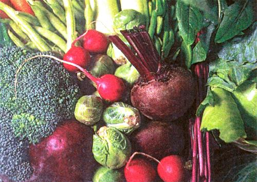 Photos: KATRIN BODYIKOGLU |
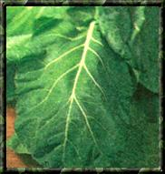 COURTESY OF PARK SEED CO |
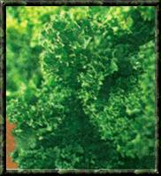 |
|
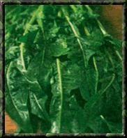 |
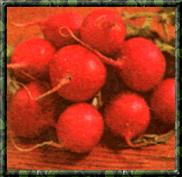 |
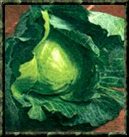 |
|
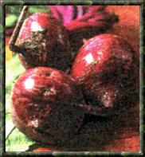 |
|
|
|
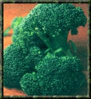 |
|
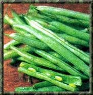 |
|
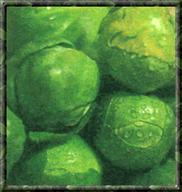 |
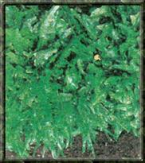 |
|